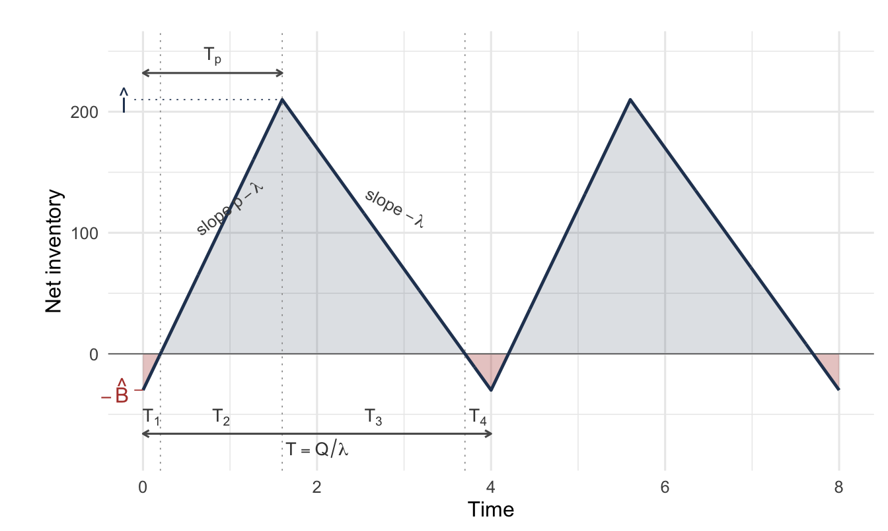
3 Deterministic Lot Sizing
NoteLearning objectives
After reading this chapter you should be able to:
- describe one cycle of a general deterministic inventory system and identify its four segments
- derive the average on-hand and backorder levels from the geometry of the cycle
- assemble the total cost rate and optimize it over the order quantity and the backorder level
- obtain the classical lot sizing models as special cases of the general one
- compute the reorder point when the lead time is shorter or longer than a cycle
- assess how much a departure from the optimal order quantity costs
- determine order quantities under all-units and incremental quantity discounts
- compute the performance measures of Section 1.6 in closed form for this model
- build and audit a spreadsheet implementation of each of these models
- reproduce the same analysis in code, and say what code does that a worksheet cannot
Recall the pair of questions from Section 1.1: how much to order, and when. In this chapter we answer them for the simplest interesting case, in which demand is known and constant, and so is everything else. That assumption is never exactly true, and Section 1.2.2 explained when it is nonetheless the right one to work under.
Our approach is to build one model that contains all the classical results, and then to obtain each of them by switching an assumption off. That is more work at the start and much less work afterwards, because the cycle geometry is derived once instead of four times.
3.1 The General Cycle
3.1.1 Assumptions
A single item is stocked at a single location. We need notation for the item before anything can be derived.
- Let \(\lambda\) represent the demand rate, which is known and constant, so that demand occurs continuously at that rate.
- Let \(p\) represent the replenishment rate, also known and constant, with \(p > \lambda\), so that stock builds while replenishment is in progress and depletes when it is not.
Unsatisfied demand is backordered, not lost, and everything repeats, i.e. each cycle is identical to the last.
Two quantities are ours to choose.
- Let \(Q\) represent the order quantity, the amount brought in each time replenishment occurs.
- Let \(\hat{B}\) represent the maximum backorder level, the depth to which the system is allowed to run short before replenishment arrives.
NoteTwo symbols for peaks
Recall that Section 1.3 writes \(I(t)\) for on-hand inventory and \(B(t)\) for backorders at an instant, with \(\bar{I}\) and \(\bar{B}\) for their time averages. In this chapter we also need their peaks within a cycle, which are written with hats:
\[ \hat{I} = \max_t I(t), \qquad \hat{B} = \max_t B(t) \]
Bar for average, hat for maximum. The peak \(\hat{B}\) is a decision, while \(\bar{B}\) is a consequence of that decision.
3.1.2 One Cycle, Four Segments
Figure 3.1 shows one cycle, and we follow it from left to right. Net inventory \(\mathit{IN}(t)\) starts at its lowest point, \(-\hat{B}\). Replenishment begins, and since production runs at \(p\) while demand continues at \(\lambda\), net inventory climbs at the net rate \(p - \lambda\). Notice that the line crosses zero partway up the first rise. At that instant the accumulated backorders have all been filled, and every unit arriving after it becomes stock, not a shipment to a waiting customer. Net inventory continues to its peak \(\hat{I}\).
Replenishment then stops and demand alone acts, so net inventory falls at rate \(\lambda\). It passes through zero a second time, at which point the shelf is empty and backorders begin to accumulate, and it reaches \(-\hat{B}\), where the cycle repeats. The two rising segments have the same slope, and the two falling segments have the same slope, because only two rates act anywhere in the cycle.
Two relations set the scale of the cycle.
- Let \(T_p\) represent the replenishment period, the length of time during which replenishment is in progress.
The quantity \(Q\) is produced at rate \(p\), so that
\[ Q = p\,T_p \qquad\Longrightarrow\qquad T_p = \frac{Q}{p} \tag{3.1}\]
During \(T_p\) the net inventory must climb the whole distance from \(-\hat{B}\) to \(\hat{I}\) at the net rate \(p - \lambda\). That is,
\[ \hat{I} + \hat{B} = (p-\lambda)T_p = (p-\lambda)\frac{Q}{p} \]
Solving for the peak in terms of the two decisions, we obtain
\[ \hat{I} = Q\left(1 - \frac{\lambda}{p}\right) - \hat{B} \tag{3.2}\]
Notice the factor \((1 - \lambda/p)\), which recurs throughout this chapter. It is the fraction of the order quantity that survives to become stock, the rest having been consumed by demand while it was still being produced. For example, an item produced at twice its demand rate keeps half of each order as stock.
The four segment lengths follow from the same two rates.
- Let \(T_1, T_2, T_3, T_4\) represent the lengths of the four segments, in the order they occur.
Over \(T_1\) the backorders are cleared at the net rate, over \(T_2\) the peak is built at the net rate, over \(T_3\) the peak is consumed at the demand rate, and over \(T_4\) the backorders accumulate at the demand rate. Therefore,
\[ T_1 = \frac{\hat{B}}{p-\lambda}, \qquad T_2 = \frac{\hat{I}}{p-\lambda}, \qquad T_3 = \frac{\hat{I}}{\lambda}, \qquad T_4 = \frac{\hat{B}}{\lambda} \tag{3.3}\]
The cycle length is their sum, and it must also be the time to consume \(Q\) at rate \(\lambda\). That is,
\[ T = T_1 + T_2 + T_3 + T_4 = \frac{Q}{\lambda} \tag{3.4}\]
3.2 Average Inventory and Backorders
Section 1.3 defines the averages as time integrals over the cycle. Here the integrands are triangles, so the integrals are areas and no calculus is needed.
Notice in Figure 3.1 that the on-hand inventory is positive over \(T_2\) and \(T_3\), forming a triangle of height \(\hat{I}\) on a base of \(T_2 + T_3\). The backorders are positive over \(T_4\) and \(T_1\), forming a triangle of height \(\hat{B}\) on a base of \(T_1 + T_4\), so that
\[ \bar{I} = \frac{1}{T}\int_{0}^{T} I(t)\,dt = \frac{1}{T}\cdot\frac{\hat{I}}{2}(T_2 + T_3), \qquad \bar{B} = \frac{1}{T}\int_{0}^{T} B(t)\,dt = \frac{1}{T}\cdot\frac{\hat{B}}{2}(T_1 + T_4) \tag{3.5}\]
Substituting Equation 3.3 and Equation 3.4 and simplifying, we obtain closed forms in the decision variables:
\[ \bar{I} = \frac{\hat{I}^{2}}{2Q\left(1-\frac{\lambda}{p}\right)} = \frac{\left[Q\left(1-\frac{\lambda}{p}\right) - \hat{B}\right]^{2}}{2Q\left(1-\frac{\lambda}{p}\right)} \tag{3.6}\]
\[ \bar{B} = \frac{\hat{B}^{2}}{2Q\left(1-\frac{\lambda}{p}\right)} \tag{3.7}\]
Example 3.1 (Working one cycle) An item is demanded at \(\lambda = 100\) units per year and replenished at \(p = 250\) units per year. The order quantity is \(Q = 400\) units and the policy permits a maximum backorder level of \(\hat{B} = 30\) units. We work the cycle through.
The peak on-hand level, from Equation 3.2, is
\[ \hat{I} = 400\left(1 - \frac{100}{250}\right) - 30 = 400(0.6) - 30 = 210 \text{ units} \]
The four segments follow from Equation 3.3, with \(p - \lambda = 150\) units per year:
\[ T_1 = \frac{30}{150} = 0.2, \quad T_2 = \frac{210}{150} = 1.4, \quad T_3 = \frac{210}{100} = 2.1, \quad T_4 = \frac{30}{100} = 0.3 \]
Notice that these sum to \(4.0\) years, which is \(Q/\lambda = 400/100\), as Equation 3.4 requires. You should perform that check every time, because it catches most algebra errors immediately.
We compute the averages twice, first from the areas directly:
\[ \bar{I} = \frac{1}{4}\cdot\frac{210}{2}(1.4 + 2.1) = \frac{1}{4}(105)(3.5) = 91.875 \] \[ \bar{B} = \frac{1}{4}\cdot\frac{30}{2}(0.2 + 0.3) = \frac{1}{4}(15)(0.5) = 1.875 \]
and then from the closed forms of Equation 3.6 and Equation 3.7, with \(Q(1-\lambda/p) = 240\):
\[ \bar{I} = \frac{210^{2}}{2(240)} = \frac{44{,}100}{480} = 91.875, \qquad \bar{B} = \frac{30^{2}}{2(240)} = \frac{900}{480} = 1.875 \]
The two routes agree, the second check we make.
The system holds about 92 units on average and owes about 2. Notice the asymmetry. A backorder allowance of 30 units, a seventh of the peak, produces an average backorder level of under two units. The reason is visible in the segments: the system spends \(T_1 + T_4 = 0.5\) years of every four in a shortage position, so the backorder triangle is short as well as low. Thus, you should not read a maximum backorder level as though it described the usual state of the system.
3.3 The Total Cost Rate
Equation 1.15 gives the shape of the total cost rate. Each term is a price from Section 1.4 times a quantity the cycle produces, so we take them one at a time.
Ordering. One order per cycle at \(k\) dollars each, and \(1/T = \lambda/Q\) cycles per unit time, giving an ordering cost rate of \(k\lambda/Q\).
Purchasing. \(Q\) units per cycle at \(c\) each, giving \(c\lambda\). Recall from Section 1.4.1 that this term does not depend on \(Q\) or \(\hat{B}\), and so it cannot affect the optimization. It is part of \(\mathit{TC}\) and not part of the relevant cost of Equation 1.16.
Holding. \(h\) per unit per unit time on the average on-hand level, \(h\bar{I}\).
Backordering. \(b\) per unit per unit time on the average backorder level, \(b\bar{B}\).
Stockout. The price \(\pi\) is charged on every unit of demand that arrives to an empty shelf, the \(\lambda_{\ell}\) of Equation 1.15. Demand arrives at rate \(\lambda\) throughout the shortage, and the shortage lasts \(T_{4} + T_{1}\). Thus, the count in a cycle is \(\lambda(T_{4} + T_{1})\) and not \(\hat{B}\).
We dwell on the distinction, because it is easy to get wrong. The peak \(\hat{B}\) is the depth the queue of waiting demand reaches, while units keep arriving as it drains. Over \(T_{1}\) another \(\lambda T_{1}\) of them join the queue and wait. From Equation 3.3,
\[ \lambda\left(T_{4} + T_{1}\right) = \lambda\left(\frac{\hat{B}}{\lambda} + \frac{\hat{B}}{p-\lambda}\right) = \frac{\hat{B}}{1-\frac{\lambda}{p}} \tag{3.8}\]
At \(\lambda/Q\) cycles per unit time, the cost rate is therefore \(\pi\hat{B}\lambda/[Q(1-\lambda/p)]\).
The backorder term needs no such correction. The average \(\bar{B}\) integrates the queue over both segments, so the waiting of the units that arrive during \(T_{1}\) is already counted there.
Collecting the five terms, we obtain
\[ \mathit{TC}(Q, \hat{B}) = \frac{k\lambda}{Q} + c\lambda + h\,\frac{\left[Q\left(1-\frac{\lambda}{p}\right) - \hat{B}\right]^{2}}{2Q\left(1-\frac{\lambda}{p}\right)} + b\,\frac{\hat{B}^{2}}{2Q\left(1-\frac{\lambda}{p}\right)} + \frac{\pi\hat{B}\lambda}{Q\left(1-\frac{\lambda}{p}\right)} \tag{3.9}\]
Notice that both shortage prices appear in Equation 3.9. Recall that Section 1.4.6 described \(\pi\) and \(b\) as belonging to different physical situations. In a backordering model with an expedite charge both are present, because \(\pi\) prices the incident of being short and \(b\) prices the waiting that incident causes. Setting either to zero is a modeling choice, and Section 3.5 makes several of them.
3.4 Optimizing the General Model
We minimize Equation 3.9 over the two decisions. Setting the partial derivatives to zero,
\[ \frac{\partial \mathit{TC}}{\partial Q} = 0, \qquad \frac{\partial \mathit{TC}}{\partial \hat{B}} = 0 \]
and solving the pair, we obtain
\[ Q^{*} = \sqrt{\frac{h+b}{b}}\; \sqrt{\frac{2k\lambda}{h\left(1-\frac{\lambda}{p}\right)} - \frac{(\pi\lambda)^{2}}{h(h+b)\left(1-\frac{\lambda}{p}\right)^{2}}} \tag{3.10}\]
\[ \hat{B}^{*} = \frac{hQ^{*}\left(1-\frac{\lambda}{p}\right) - \pi\lambda}{h+b} \tag{3.11}\]
Every classical lot sizing result in this chapter is Equation 3.10 and Equation 3.11 with something switched off.
Two structural features can be read off before we specialize. Notice first that the factor \(\sqrt{(h+b)/b}\) is greater than one and increases as \(b\) falls. Thus, cheaper backordering means larger orders, because the system is willing to run short for longer between replenishments. Notice second that \(\hat{B}^{*}\) is proportional to \(h/(h+b)\) through \(Q^{*}\). That is, it depends on the ratio of the cost of holding to the cost of holding plus the cost of owing, the same trade-off that the newsvendor’s critical ratio expresses in Chapter 7.
Neither formula is unconditionally usable, and you should see the reason now rather than discover it later. A large \(\pi\) drives the second term under the inner root above the first, leaving no real root. A little below that threshold, Equation 3.11 returns a negative \(\hat{B}^{*}\). In both cases the stationary point lies outside the feasible region, so the optimum is on the boundary \(\hat{B} = 0\), where the model reduces to Equation 3.14.
Neither case is exotic. For example, with \(\lambda = 100\), \(p = 250\), \(k = 20\), \(h = 4\), and \(b = 6\), the backorder level turns negative by \(\pi = 1\) and the root disappears by \(\pi = 1.55\). A high enough price on being short means the right answer is never to be short.
3.5 The Classical Models as Special Cases
Four assumptions can be relaxed or imposed: whether replenishment is instantaneous, whether backorders are permitted, and whether each of the two shortage prices is charged. Table 3.1 collects the results, and we derive each of them in turn.
| Assumptions | Model | Order quantity |
|---|---|---|
| \(p\) finite, backorders, both \(\pi\) and \(b\) | General | Equation 3.10 |
| \(p\) finite, backorders, \(\pi = 0\) | General, no expedite charge | \(\sqrt{\dfrac{h+b}{b}}\sqrt{\dfrac{2k\lambda}{h\left(1-\frac{\lambda}{p}\right)}}\) |
| \(p\) finite, no backorders | Economic production quantity | \(\sqrt{\dfrac{2k\lambda}{h\left(1-\frac{\lambda}{p}\right)}}\) |
| \(p \to \infty\), backorders, \(\pi = 0\) | EOQ with planned backorders | \(\sqrt{\dfrac{h+b}{b}}\sqrt{\dfrac{2k\lambda}{h}}\) |
| \(p \to \infty\), no backorders | Classical EOQ | \(\sqrt{\dfrac{2k\lambda}{h}}\) |
3.5.1 No Charge Per Unit Short
Setting \(\pi = 0\) removes the subtracted term in Equation 3.10, which leaves
\[ Q^{*} = \sqrt{\frac{h+b}{b}}\sqrt{\frac{2k\lambda}{h\left(1-\frac{\lambda}{p}\right)}}, \qquad \hat{B}^{*} = Q^{*}\,\frac{h\left(1-\frac{\lambda}{p}\right)}{h+b} \tag{3.12}\]
Equation 3.12 is the usual formulation when shortages are paid for by the waiting they cause and nothing else. That is the common case when backorders are filled from the next scheduled replenishment and not by an expedited shipment.
3.5.2 No Backorders
Forbidding shortages means \(\hat{B} = 0\), so both \(\bar{B}\) and the stockout term vanish, and Equation 3.6 collapses to
\[ \bar{I} = \frac{\left[Q\left(1-\frac{\lambda}{p}\right)\right]^{2}}{2Q\left(1-\frac{\lambda}{p}\right)} = \frac{Q}{2}\left(1-\frac{\lambda}{p}\right) \]
This is the familiar half-of-the-peak result, adjusted for the fraction of the order that survives production. The cost rate becomes
\[ \mathit{TC}(Q) = \frac{k\lambda}{Q} + c\lambda + \frac{hQ}{2}\left(1-\frac{\lambda}{p}\right) \tag{3.13}\]
Minimizing Equation 3.13 over \(Q\), we obtain the economic production quantity
\[ Q^{*} = \sqrt{\frac{2k\lambda}{h\left(1-\frac{\lambda}{p}\right)}} \tag{3.14}\]
WarningHow backorders are forbidden
You may be tempted to obtain Equation 3.14 by setting \(b = 0\), and that is wrong. A zero backorder cost makes shortages free, not forbidden, and Equation 3.12 then makes \(Q^{*}\) unbounded.
Forbidding shortages is instead the limit \(b \to \infty\). In Equation 3.12, \(\sqrt{(h+b)/b} \to 1\) and \(\hat{B}^{*} \to 0\), which recovers Equation 3.14 exactly. Thus, charging an infinite price for owing a unit is how a model is told never to owe one.
3.5.3 Instantaneous Replenishment
If a replenishment arrives all at once instead of being produced over time, then \(p \to \infty\) and \(\lambda/p \to 0\). The factor \((1-\lambda/p)\) becomes one and \(T_p\) becomes zero. Thus, the cycle loses its build-up segments, and the sawtooth of Figure 3.1 becomes vertical on the way up.
With backorders still permitted and \(\pi = 0\),
\[ Q^{*} = \sqrt{\frac{h+b}{b}}\sqrt{\frac{2k\lambda}{h}}, \qquad \hat{B}^{*} = Q^{*}\,\frac{h}{h+b} \tag{3.15}\]
3.5.4 The Classical Economic Order Quantity
Imposing both instantaneous replenishment and no backorders leaves the oldest result in the subject. The cost rate is
\[ \mathit{TC}(Q) = \frac{k\lambda}{Q} + c\lambda + \frac{hQ}{2} \tag{3.16}\]
Notice the three terms: an ordering term falling in \(Q\), a holding term rising in \(Q\), and a purchase term that does not depend on \(Q\) at all. Differentiating,
\[ \frac{d\,\mathit{TC}}{dQ} = -\frac{k\lambda}{Q^{2}} + \frac{h}{2} = 0 \qquad\Longrightarrow\qquad Q^{*} = \sqrt{\frac{2k\lambda}{h}} \tag{3.17}\]
Substituting back, we obtain a total cost with a memorable form:
\[ \mathit{TC}^{*} = \sqrt{2k\lambda h} + c\lambda \tag{3.18}\]
Notice that at the optimum the ordering and holding terms are equal, each contributing \(\sqrt{2k\lambda h}/2\). That is not a coincidence, and it is the fastest way to check a numerical answer. If the two terms differ, then \(Q\) is not optimal.
Figure 3.2 shows the three terms for an item with \(\lambda = 2400\) units per year, \(k = \$75\) per order, and \(h = \$4\) per unit per year. Reading it from left to right, the ordering curve falls steeply at small quantities, because a small order means many orders a year. The holding line rises steadily, since average stock is proportional to the order quantity. Notice that the two cross exactly at the dashed line marking \(Q^{*}\), the equal-terms property stated above made visible.
Notice also the shape of the total curve near its minimum. It is flat over a wide range of quantities, so a quantity some way from \(Q^{*}\) costs very little more than \(Q^{*}\) itself. That flatness is the subject of Section 3.7 and it is relied on repeatedly later in the book.
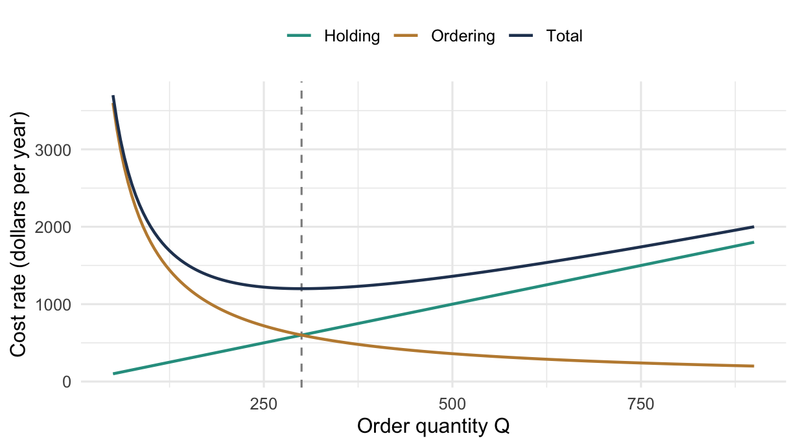
Because \(Q^{*}\) is fixed and demand is constant, the optimal cycle length follows immediately as
\[ T^{*} = \frac{Q^{*}}{\lambda} = \sqrt{\frac{2k}{h\lambda}} \tag{3.19}\]
Choosing \(Q\) and choosing \(T\) are the same decision. Which one you present to an operating group depends on what they can act on. For example, a warehouse that ships on a weekly cycle finds a time far easier to use than a quantity.
Example 3.2 (The economic order quantity) A product is demanded at \(\lambda = 220\) units per year and has a unit cost of \(c = \$1{,}200\) per unit. The ordering cost is \(k = \$800\) per order and the carrying charge is \(i = 0.18\) per year. No shortages are allowed. We work the four parts in turn.
The holding cost, from Equation 1.12, is
\[ h = ic = (0.18)(1200) = \$216 \text{ per unit per year} \]
a) The optimal order quantity. From Equation 3.17,
\[ Q^{*} = \sqrt{\frac{2(800)(220)}{216}} = \sqrt{\frac{352{,}000}{216}} = 40.37 \text{ units} \]
b) The optimal time between orders. From Equation 3.19,
\[ T^{*} = \frac{40.37}{220} = 0.1835 \text{ year} = 66.98 \text{ days} \]
c) The optimal total cost. From Equation 3.18,
\[ \mathit{TC}^{*} = \sqrt{2(800)(220)(216)} + (1200)(220) = 8{,}719.63 + 264{,}000 = \$272{,}719.63 \]
Notice the proportions. The purchase cost is 97% of the total and is untouched by the decision. The $8,719.63 is the entire quantity the lot sizing decision can influence, and half of it is ordering cost and half is holding cost. That equal split is the check of Section 3.5.4, and you should perform it every time, because unequal halves mean \(Q\) is not optimal.
d) The reorder point for a 7 day lead time. Seven days is well under the 66.98 day cycle. Thus, Section 3.6 gives \(r = \lambda L\):
\[ r = 220\left(\frac{7}{365}\right) = 4.22 \text{ units} \]
An order is placed whenever the inventory position falls to about 4 units.
A closing observation. The optimal cycle \(T^{*} = 66.98\) days is 9.6 weeks. If this item ships on a weekly truck, then ordering every ten weeks fits an operating rhythm the warehouse already has, and it costs almost nothing against the optimum, as Section 3.7 will confirm. You will usually find that the better answer.
3.6 Lead Time and the Reorder Point
Nothing so far has said when to order, only how much. With demand and lead time both known the timing is exact. We place the order so that it arrives at the moment stock would otherwise reach \(-\hat{B}\).
- Let \(L\) represent the replenishment lead time, which is known and constant.
- Let \(r\) represent the reorder point, the inventory position at which the order is placed.
When \(L \le T\). Demand over the lead time is \(\lambda L\). Thus, ordering when the position reaches
\[ r = \lambda L - \hat{B} \tag{3.20}\]
brings the replenishment in exactly on time. With no backorders permitted this reduces to \(r = \lambda L\).
When \(L > T\). A lead time longer than a cycle means one or more replenishment orders are outstanding when the next is placed. Thus, the reorder point must account only for the demand not already covered by those outstanding orders. The number of whole cycles inside the lead time is \(\lfloor L/T \rfloor\), so the uncovered portion of the lead time is the remainder \(L - \lfloor L/T \rfloor T\), which gives
\[ r = \left(L - \left\lfloor \frac{L}{T} \right\rfloor T\right)\lambda - \hat{B} \tag{3.21}\]
Equation 3.21 reduces to Equation 3.20 when \(L < T\), because the floor is then zero. Recall from Section 1.3.3 that what matters is the inventory position, which counts outstanding orders, and not the on-hand level. Equation 3.21 is the deterministic version of that point.
3.7 Sensitivity of the Order Quantity
The formulas above return a number like 40.37, and no warehouse orders 40.37 of anything. It matters how much is lost by rounding that number, or by ordering a case quantity, or by fitting a shipping schedule.
- Let \(C(Q)\) represent the relevant cost of Equation 1.16 at an order quantity \(Q\), which for this model is the part of Equation 3.16 that depends on \(Q\).
That is,
\[ C(Q) = \frac{k\lambda}{Q} + \frac{hQ}{2}, \qquad C^{*} = C(Q^{*}) = \sqrt{2k\lambda h} \]
Taking the ratio and substituting \(Q^{*} = \sqrt{2k\lambda/h}\), we obtain
\[ \frac{C(Q)}{C^{*}} = \frac{1}{2}\left(\frac{Q}{Q^{*}} + \frac{Q^{*}}{Q}\right) \tag{3.22}\]
Notice that the penalty depends only on the ratio of the chosen quantity to the optimal one, and not on \(k\), \(\lambda\), \(h\), or the size of the item. Recall that the same expression appeared in Section 1.4.8, where the ratio came from an error in the parameters and not from a deliberate rounding.
Example 3.3 (What a wrong order quantity costs) Suppose the order quantity used is 50% larger than optimal, \(Q/Q^{*} = 3/2\). From Equation 3.22,
\[ \frac{C}{C^{*}} = \frac{1}{2}\left(\frac{3}{2} + \frac{2}{3}\right) = \frac{1}{2}\left(\frac{9+4}{6}\right) = \frac{13}{12} = 1.083 \]
That is an increase of 8.3% in the relevant cost. For example, for the item of Example 3.2, whose relevant cost is $8,719.63, it amounts to about $727 a year against a total spend of $272,720.
Ordering half the optimal quantity, \(Q/Q^{*} = 1/2\), gives \(\tfrac12(0.5 + 2) = 1.25\), a penalty of 25%. Ordering double gives the same 25%, because Equation 3.22 is symmetric in \(Q/Q^{*}\) and its reciprocal.
You should read this as saying that the EOQ is a target to round toward, not a value to honor. Being wrong by half is expensive; being wrong by a fifth is not. That tolerance is the reason it is reasonable to order in case quantities, to fit a delivery schedule, and to group items onto a shared order, all of which Chapter 4 does deliberately.
3.8 Quantity Discounts
Everything so far has treated the unit cost \(c\) as a constant, which made the purchase term \(c\lambda\) inert. Suppliers routinely price in tiers, and once \(c\) depends on \(Q\) the purchase term is no longer inert. The analysis changes.
Two schemes are in general use. Under all-units discounting the whole order is priced at the rate reached by its size. Under incremental discounting only the units above each break point receive the lower price. For example, on a schedule breaking at 500 units, an order of 600 units pays the lower price on all 600 units under all-units discounting and on only the last 100 under incremental discounting. They lead to different models and different answers, so we treat them separately.
The setting is common to both.
- Let \(m\) represent the number of discount levels.
- Let \(q_j\) represent the break point beginning level \(j\), with
\[ q_1 = 0 < q_2 < q_3 < \cdots < q_m \]
- Let \(c_j\) represent the unit price applying in interval \(j\), i.e. for \(q_j \le Q < q_{j+1}\), with \(c_1 > c_2 > \cdots > c_m\) so that larger orders are cheaper per unit.
We assume a single item at a single location, no shortages, and instantaneous replenishment, so that the underlying model is the classical EOQ of Section 3.5.4.
3.8.1 All-Units Discounting
If the entire order is priced at \(c_j\), then the cost rate within interval \(j\) is Equation 3.16 with that price:
\[ \mathit{TC}_j(Q) = c_j\lambda + \frac{k\lambda}{Q} + \frac{h_j Q}{2}, \qquad h_j = ic_j, \qquad q_j \le Q < q_{j+1} \tag{3.23}\]
The important feature is that \(\mathit{TC}(Q)\) is not continuous. Each interval carries its own curve, lower prices give lower curves, and at each break point the cost drops to the next curve down.
Figure 3.3 shows the shape for an item with \(\lambda = 8000\) units per year, \(k = \$30\) per order, \(i = 0.30\) per year, and a price of $10 below 500 units and $9 at or above. Each price is drawn solid where it applies and dotted where it does not, so the cost function the buyer actually faces is the solid pieces only. Notice that the $9 curve lies wholly below the $10 curve, because a lower price lowers both the purchase term and the holding term. Notice also what happens at the dashed line marking the break point. The solid path drops vertically from the upper curve to the lower one, and that drop is why the minimum cannot be found by differentiating.
The two marked points are the candidates the procedure below produces. The left one is the unconstrained minimum of the $10 curve, feasible because it lies below 500. The right one sits exactly at the break point, because the $9 curve is still falling when it becomes available.
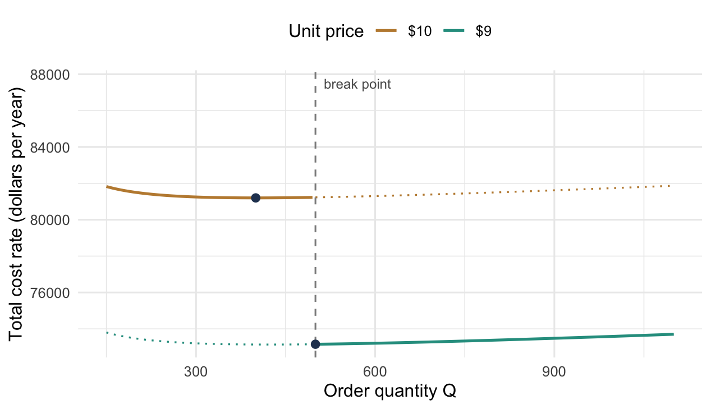
Because the function is discontinuous, we cannot find the minimum by differentiating alone. There are three cases, collected in Table 3.2, and the procedure below handles all of them.
| Case | What happens | Why |
|---|---|---|
| Minimum at a break point \(q_j\) | The unconstrained \(Q_j^{*}\) lies below \(q_j\), so the interval’s best feasible point is its left endpoint | The discount reduces cost by more than the extra stock costs to hold |
| Minimum inside the interval | \(Q_j^{*}\) falls within \([q_j, q_{j+1})\) | The extra carrying cost outweighs the price reduction |
| A local minimum only | The interval contains a minimum that a lower interval beats | Must compare across intervals, not within one |
The procedure follows from Table 3.2:
- For each price level \(j\), compute \(Q_j^{*} = \sqrt{2k\lambda/h_j}\).
- Discard any \(Q_j^{*}\) that falls outside its own interval \([q_j, q_{j+1})\); that price is not available at that quantity.
- For each discarded level whose price is lower than a feasible one, add the break point \(q_j\) as a candidate, since the interval’s cost is decreasing up to its unconstrained minimum.
- Evaluate Equation 3.23 at every candidate and take the smallest.
Example 3.4 (An all-units discount) An item has \(\lambda = 8000\) units per year, \(k = \$30\) per order, and a carrying charge of \(i = 0.30\) per year. The supplier prices it at $10 per unit for orders below 500 and $9 per unit for orders of 500 or more. This is the item drawn in Figure 3.3, and we now work its four steps.
Step 1, the candidate quantities. With \(h_j = ic_j\),
\[ Q_1^{*} = \sqrt{\frac{2(30)(8000)}{10(0.3)}} = \sqrt{160{,}000} = 400 \qquad Q_2^{*} = \sqrt{\frac{2(30)(8000)}{9(0.3)}} = \sqrt{177{,}778} = 422 \]
Step 2, feasibility. The quantity \(Q_1^{*} = 400\) lies in \([0, 500)\), so it is feasible at the $10 price. However, \(Q_2^{*} = 422\) does not lie in \([500,\infty)\), so 422 units cannot be bought at $9. That candidate is discarded.
Step 3, the break point. Since the $9 curve is still decreasing at 500, the best available quantity at that price is the break point itself. 500 joins the candidate list.
Step 4, evaluate.
\[ \mathit{TC}(400) = 8000(10) + \frac{30(8000)}{400} + \frac{(0.3)(10)(400)}{2} = 80{,}000 + 600 + 600 = \$81{,}200 \] \[ \mathit{TC}(500) = 8000(9) + \frac{30(8000)}{500} + \frac{(0.3)(9)(500)}{2} = 72{,}000 + 480 + 675 = \$73{,}155 \]
Order 500. Buying a quarter more than the EOQ at the $10 price saves $8,045 a year, almost all of it on the purchase term. The holding cost does rise, from $600 to $675. However, $75 of extra holding against $8,000 of price reduction is not a contest.
This is the first case in Table 3.2, and it is the common one. When a discount is worth taking at all, it is usually worth taking exactly at the break point and no further.
3.8.2 Incremental Discounting
Under incremental discounting the unit price falls only on the units above each break point. An order of size \(Q\) in interval \(j\) pays \(c_1\) for the first \(q_2 - q_1\) units, \(c_2\) for the next \(q_3 - q_2\), and so on, with \(c_j\) applying only to the \(Q - q_j\) units above the last break point crossed.
- Let \(R_j\) represent the cost of filling all the intervals below \(j\) completely.
That is,
\[ R_j = \sum_{i=2}^{j} c_{i-1}\left(q_i - q_{i-1}\right), \qquad R_1 \equiv 0 \tag{3.24}\]
The purchase cost of an order of size \(Q\) in interval \(j\) is then
\[ C(Q) = R_j + c_j\left(Q - q_j\right) \tag{3.25}\]
Unlike the all-units case, Equation 3.25 is continuous. Crossing a break point changes the slope of the purchase cost, not its level.
The consequence for the model is that the average price per unit now depends on \(Q\):
\[ \frac{C(Q)}{Q} = \frac{R_j}{Q} + c_j - \frac{c_j q_j}{Q} \]
Holding cost is charged on the value of what is held. The holding cost per unit becomes \(i\,C(Q)/Q\) instead of \(ic_j\). Substituting into the cost rate and collecting terms in \(Q\), we obtain
\[ \mathit{TC}(Q) = \frac{k_j\lambda}{Q} + \frac{h_j Q}{2} + \underbrace{c_j\lambda + \frac{i\left(R_j - c_j q_j\right)}{2}}_{\text{independent of } Q} \tag{3.26}\]
where
\[ k_j = R_j - c_j q_j + k, \qquad h_j = ic_j \tag{3.27}\]
This is the point of the manipulation. Notice that the \(Q\)-dependent part of Equation 3.26 has exactly the form of Equation 3.16, with an effective ordering cost \(k_j\) in place of \(k\). Thus, the ordinary square root formula applies level by level:
\[ Q_j^{*} = \sqrt{\frac{2k_j\lambda}{h_j}} \tag{3.28}\]
The procedure is then to compute \(Q_j^{*}\) for each level, keep those that fall inside their own interval, evaluate Equation 3.26 at each survivor, and take the smallest. Unlike the all-units case, there are no break-point candidates, because the cost function is continuous and has no downward jumps to exploit.
Example 3.5 (An incremental discount) An item has \(\lambda = 3000\) units per year, \(k = \$50\) per order, and \(i = 0.30\) per year. The supplier’s incremental schedule is given in Table 3.3, and we work the levels in turn.
| Interval | Break point \(q_j\) | Price \(c_j\) |
|---|---|---|
| 1 | 0 | $3.00 |
| 2 | 500 | $2.97 |
| 3 | 1500 | $2.95 |
The filled-interval costs. From Equation 3.24,
\[ R_1 = 0, \qquad R_2 = 3.00(500 - 0) = 1500, \qquad R_3 = 1500 + 2.97(1500-500) = 4470 \]
The effective ordering costs. From Equation 3.27,
\[ k_1 = 0 - 3.00(0) + 50 = 50, \quad k_2 = 1500 - 2.97(500) + 50 = 65, \quad k_3 = 4470 - 2.95(1500) + 50 = 95 \]
The effective ordering cost rises with the discount level. That is the mechanism by which incremental discounting encourages larger orders. Reaching a deeper level means having already paid for everything below it, and that paid amount behaves exactly like a larger fixed charge.
The candidate quantities. From Equation 3.28 with \(h_j = ic_j\),
\[ Q_1^{*} = \sqrt{\frac{2(50)(3000)}{0.3(3.00)}} = 577.4, \quad Q_2^{*} = \sqrt{\frac{2(65)(3000)}{0.3(2.97)}} = 661.6, \quad Q_3^{*} = \sqrt{\frac{2(95)(3000)}{0.3(2.95)}} = 802.5 \]
Feasibility. The quantity \(Q_1^{*} = 577.4\) must lie in \([0, 500)\) and does not, and \(Q_3^{*} = 802.5\) must lie in \([1500, \infty)\) and does not. Only \(Q_2^{*} = 661.6\) lies in its own interval \([500, 1500)\).
The answer. One candidate survives. Thus, \(Q^{*} = 661.6\) units, and from Equation 3.26
\[ \mathit{TC} = \frac{65(3000)}{661.6} + \frac{0.891(661.6)}{2} + 2.97(3000) + \frac{0.3\left(1500 - 2.97(500)\right)}{2} = \$9{,}501.73 \]
Notice that the first two terms are $294.74 each. The effective ordering cost substitution has turned this into an ordinary EOQ problem, so the balance property of Section 3.5.4 still holds. You should perform that check every time, because it confirms both the effective ordering cost and the quantity computed from it.
3.9 Performance Measures for the Cycle
Section 1.6 defined the service measures without reference to any model. Because the deterministic cycle is fully known, each of them has a closed form here, and computing them is a good way to see what the definitions mean.
Throughout this section we use the general cycle of Section 3.1 with its four segments.
Order frequency. One order is placed per cycle, so that
\[ \overline{N} = \frac{1}{T} = \frac{\lambda}{Q} \tag{3.29}\]
Inventory turnover. From Equation 1.8, with \(\bar{I}\) from Equation 3.6:
\[ \mathit{TO} = \frac{\lambda}{\bar{I}} \]
Fraction of time out of stock. The system is short over \(T_4\) and \(T_1\). Thus, from the stockout indicator of Equation 1.9,
\[ \overline{\mathit{SO}} = \frac{T_1 + T_4}{T} = \frac{\dfrac{\hat{B}}{p-\lambda} + \dfrac{\hat{B}}{\lambda}}{\dfrac{Q}{\lambda}} \tag{3.30}\]
Ready rate. Its complement, \(\overline{\mathit{RR}} = 1 - \overline{\mathit{SO}}\).
Rate of unfilled demand. Demand arrives at a constant rate, so the rate at which it arrives to an empty shelf is \(\lambda\overline{\mathit{SO}}\). That is \(\lambda_{\ell}\) of Equation 1.3, computable exactly here.
Average customer wait. From Equation 1.6, \(\overline{W} = \bar{B}/\lambda\).
Example 3.6 (Performance of the general cycle) Recall the cycle of Example 3.1, with \(\lambda = 100\), \(p = 250\), \(Q = 400\), and \(\hat{B} = 30\), giving \(T = 4\) years, segments \(0.2, 1.4, 2.1, 0.3\), and averages \(\bar{I} = 91.875\) and \(\bar{B} = 1.875\) units. We compute each measure in turn.
\[ \overline{N} = \frac{100}{400} = 0.25 \text{ orders per year} \] \[ \mathit{TO} = \frac{100}{91.875} = 1.09 \text{ turns per year} \] \[ \overline{\mathit{SO}} = \frac{0.2 + 0.3}{4} = 0.125, \qquad \overline{\mathit{RR}} = 0.875 \] \[ \lambda\overline{\mathit{SO}} = 12.5 \text{ units per year arrive to an empty shelf} \] \[ \overline{W} = \frac{1.875}{100} = 0.01875 \text{ year} = 6.8 \text{ days} \]
We compare the last two. The system is out of stock one eighth of the time, which sounds poor, and a customer who is made to wait waits about a week. Whether that is acceptable is not a question the model answers. Section 1.6.2.7 is about who does answer it.
Notice also that the ready rate of 87.5% and the fill rate are the same here. Demand arrives continuously at a constant rate, so the fraction of demand arriving during a stockout equals the fraction of time in stockout. You should treat that equality as a consequence of the deterministic assumption and not as a general fact. Section 1.6.2.6 gives the condition under which it survives into stochastic models.
3.10 Building These Models in a Spreadsheet
Every result in this chapter is a formula in three or four inputs, so a spreadsheet is the natural place to put it. The workbook that accompanies this chapter, DeterministicInventory.xlsx, carries one worksheet per model, and all of them are built to the same plan. That plan is worth more than any single worksheet, because it lets someone who did not write the implementation audit it. In this section we take the plan first and then read each worksheet against it.
3.10.1 The Four-Block Layout
Each worksheet is divided into blocks, in the order given in Table 3.4.
| Block | Contents | Role |
|---|---|---|
| Inputs | \(\lambda\), \(c\), \(i\), \(k\), \(L\), and \(p\) where the model has one, each with its units beside it | the only cells anyone types into |
| Intermediate calculations | quantities derived from the inputs alone, such as \(h = ic\) and \(1 - \lambda/p\) | names the pieces the formulas are assembled from |
| Outputs for any \(Q\) | frequency, cycle time, average inventory, and each cost component, all evaluated at a quantity that is typed in | the evaluator |
| Outputs for \(Q^{*}\) | the same rows recomputed at the optimum | the optimizer |
Two conventions run through all of it. First, every input carries a units label in the adjacent cell. That is the dimensional discipline of Section 1.4.1 enforced by the layout, because a carrying charge quoted per year cannot be dropped silently into a model whose demand rate is per month when the two labels sit side by side. Second, every quantity has a rounded companion computed with ROUNDUP, so the integer that would actually be ordered is visible next to the number the formula produced.
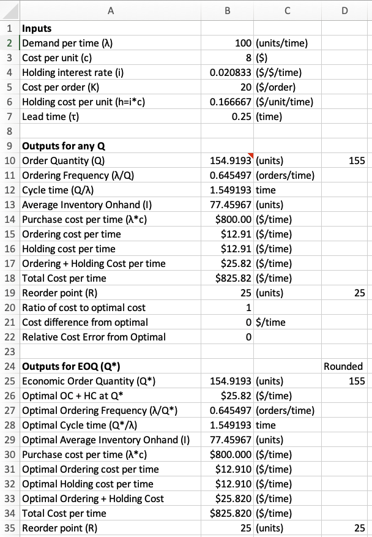
Figure 3.4 shows the plan in place on the Classic EOQ worksheet. Reading it top to bottom, rows 1 to 7 are the input block, with every rate carrying its unit in the cell to its right. Rows 9 to 22 are the evaluator, which computes every quantity at whatever order quantity is typed into it. Rows 24 to 35 are the optimizer, the same list of rows recomputed at \(Q^{*}\). Notice that column D repeats several quantities as ROUNDUP companions, so the integer that would actually be ordered sits beside the number the formula produced.
Notice the three rows that join the two output blocks. They are the whole of Section 3.7 built into the sheet: the ratio of the evaluated cost to the optimal cost, the difference, and the relative error. In Figure 3.4 they read \(1\), \(0\), and \(0\), because the evaluator has been given \(Q^{*}\) itself. Type any other quantity and the penalty appears immediately.
The worksheet labels are not identical to the notation of this book, mostly for reasons of what a spreadsheet can display. Table 3.5 gives the translation, and you should keep it at hand when reading any of the worksheet figures.
| Worksheet label | This book | Meaning |
|---|---|---|
| Demand per time (\(\lambda\)) | \(\lambda\) | demand rate |
| Cost per unit (\(c\)) | \(c\) | unit purchase or production cost |
| Holding interest rate (\(i\)) | \(i\) | carrying charge |
| Cost per order (\(K\)) | \(k\) | fixed cost of an order or setup |
| Holding cost per unit (\(h = i \ast c\)) | \(h\) | holding cost rate |
| Lead time (\(\tau\)) | \(L\) | replenishment lead time |
| Production rate (\(P\)) | \(p\) | production rate |
| Average Inventory Onhand (\(I\)) | \(\bar{I}\) | average on-hand level |
| Max On Hand Inventory (\(H\)) | \(\hat{I}\) | peak on-hand level |
| Reorder point (\(R\)) | \(r\) | reorder point |
Example 3.7 (Reading the classic EOQ worksheet) The Classic EOQ worksheet of Figure 3.4 is set up in months, with \(\lambda = 100\) units per month, \(c = \$8\) per unit, a carrying charge of 25% per year entered as \(i = 0.25/12\) per month, \(k = \$20\) per order, and \(L = 0.25\) month. We follow the sheet block by block.
The intermediate cell gives the holding cost rate,
\[ h = ic = \frac{0.25}{12}(8) = \$0.16667 \text{ per unit per month} \]
The optimizer block then applies Equation 3.17, Equation 3.19, and Equation 3.18:
\[ Q^{*} = \sqrt{\frac{2(20)(100)}{0.16667}} = \sqrt{24{,}000} = 154.92 \text{ units}, \qquad T^{*} = \frac{154.92}{100} = 1.5492 \text{ months} \]
\[ \frac{k\lambda}{Q^{*}} = \frac{h Q^{*}}{2} = \$12.91 \text{ per month}, \qquad \mathit{TC}^{*} = 25.82 + (8)(100) = \$825.82 \text{ per month} \]
The two cost components agree to five figures. That is the balance check of Section 3.5.4, performed by the sheet itself and not by the reader.
The evaluator. No one orders 154.92 units. Typing the ROUNDUP value 155 into the evaluator returns a relative cost error of \(1.4 \times 10^{-7}\), effectively nothing. Typing 150 or 160 returns \(0.052\%\) in either case, about a penny a month on a relevant cost of $25.82. Typing 200 returns \(3.3\%\). The three sensitivity rows turn Equation 3.22 into an experiment instead of an algebraic exercise.
Why the units column matters. Suppose the annual charge of 0.25 had been entered directly against a monthly demand rate. Then \(h\) would have been twelve times too large, and \(Q^{*}\) would have come out as 44.7 units, an error of a factor of \(\sqrt{12}\). Nothing in the arithmetic would have signaled it. The units label beside the cell is the only guard, so you should never omit it.
3.10.2 The Reorder Point Cell
One cell in the worksheet deserves attention on its own. The reorder point is computed as
= MOD(lead time, cycle time) * demand ratewhich is Equation 3.21 written in the one function that already does the work. MOD(L, T) returns \(L - \lfloor L/T \rfloor T\), i.e. the part of the lead time not covered by orders already outstanding. When \(L < T\) the floor is zero and the expression collapses to \(\lambda L\). Thus, the single cell handles both cases of Section 3.6 without an IF.
Figure 3.5 shows the same worksheet with its formulas displayed instead of its values, the view to use when auditing someone else’s sheet. Reading down the optimizer block, every formula there is one of the closed forms of Section 3.5.4, written once and referring only to the input and intermediate cells above it. Notice the reorder point cell, which is the single MOD call discussed above.
Notice one further detail that only the formula view reveals. The order quantity cell of the evaluator holds a reference to the optimizer’s \(Q^{*}\) and not a typed number. The evaluator opens at the optimum, and typing over that one cell is the intended way to use it.
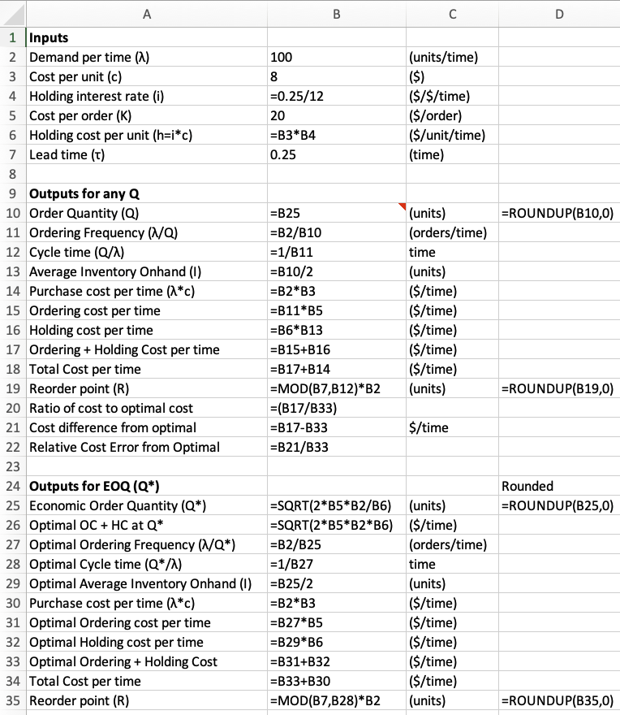
MOD call, the order quantity in the evaluator is a reference to the optimum below it, and every formula in the optimizer block is one of the closed forms of Section 3.5.4.
Example 3.8 (A lead time longer than the cycle) Recall the item of Example 3.7, whose cycle is \(T^{*} = 1.5492\) months, and suppose the supplier now quotes a lead time of \(L = 4\) months.
The naive calculation gives \(\lambda L = 100(4) = 400\) units, more than twice the order quantity, so it cannot be a position at which to order. The worksheet cell instead gives
\[ \left\lfloor \frac{4}{1.5492} \right\rfloor = \lfloor 2.582 \rfloor = 2, \qquad 4 - 2(1.5492) = 0.9016 \text{ month}, \qquad r = 100(0.9016) = 90.16 \text{ units} \]
Two replenishment orders are outstanding at the moment the third is placed, and they cover \(2T\) of the four months. Only the remaining \(0.9016\) month has to be covered by stock on hand. Thus, the order is placed when the inventory position reaches 90.16 units. Recall that Section 1.3.3 distinguishes the position carefully from the on-hand level, and this is a case where the distinction decides the answer.
Sweeping \(L\) upward makes the point visible. For example, at \(L = 2\) months the same cell returns \(r = 45.08\) units, far less than \(\lambda L = 200\). The reorder point is not monotone in the lead time. It climbs to \(Q\) and drops back to zero once per cycle length of lead time.
3.10.3 Reducing the Production Model to the Order Model
The Classic POQ worksheet is the clearest illustration of what Section 3.5 is claiming. Rather than coding Equation 3.14 as a new formula, the worksheet computes three intermediate cells,
\[ \frac{\lambda}{p}, \qquad 1 - \frac{\lambda}{p}, \qquad h' = h\left(1 - \frac{\lambda}{p}\right) \]
and then applies the ordinary EOQ formula to \(h'\). The production model is not implemented at all. It is the order model with a different holding cost rate. The same substitution turns Equation 3.18 into the production version, so one set of formulas serves both worksheets.
The worksheet also guards its own assumption. A cell beside the production rate reads
= IF(demand rate >= production rate,
"Infeasible production rate", "Production rate feasible")because the cycle of Section 3.1 exists only when \(p > \lambda\). Without the guard, \(p = \lambda\) produces \(h' = 0\) and a division by zero, while \(p < \lambda\) produces a negative holding cost and a square root of a negative number. Neither failure explains itself, so the sheet explains it first.
Figure 3.6 shows both the substitution and the guard. Reading the intermediate block downward, the three cells build \(\lambda/p\), then \(1 - \lambda/p\), then \(h'\), each referring only to the cell above it. Notice that the optimizer block below contains no production formulas at all, only the ordinary EOQ formulas pointed at \(h'\). The guard sits beside the production rate input, where someone typing a bad rate will see it.
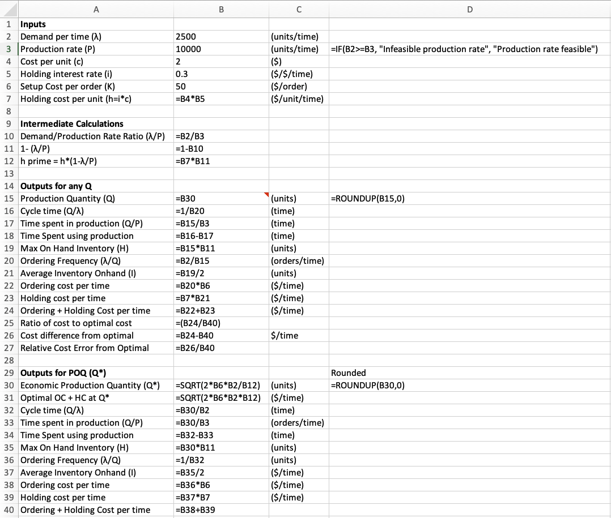
Example 3.9 (Reading the production worksheet) The worksheet is set up with \(\lambda = 2500\) units per year, \(p = 10{,}000\) units per year, \(c = \$2\) per unit, \(i = 0.30\) per year, and a setup cost of \(k = \$50\). We read it block by block.
The intermediate block gives
\[ h = ic = 0.60, \qquad \frac{\lambda}{p} = 0.25, \qquad 1 - \frac{\lambda}{p} = 0.75, \qquad h' = 0.60(0.75) = \$0.45 \]
The optimizer block then runs the ordinary EOQ formula on \(h'\):
\[ Q^{*} = \sqrt{\frac{2(50)(2500)}{0.45}} = 745.36 \text{ units}, \qquad \frac{k\lambda}{Q^{*}} = \frac{h' Q^{*}}{2} = \$167.71 \text{ per year} \]
The cycle quantities then follow from Equation 3.2 with \(\hat{B} = 0\) and from Equation 3.1:
\[ \hat{I} = 745.36(0.75) = 559.02, \quad \bar{I} = 279.51, \quad T = \frac{745.36}{2500} = 0.2981, \quad T_p = \frac{745.36}{10{,}000} = 0.0745 \]
Notice that the machine runs for \(0.0745\) year of every \(0.2981\) year cycle, i.e. a quarter of the time, which is \(\lambda/p\) as it must be. You should perform that check every time, because it catches an error in either the cycle length or the replenishment period.
Figure 3.7 shows the completed sheet with its values. Reading across the two output blocks, the ordering and holding costs agree at $167.71, the balance check of Section 3.5.4 surviving the substitution intact.
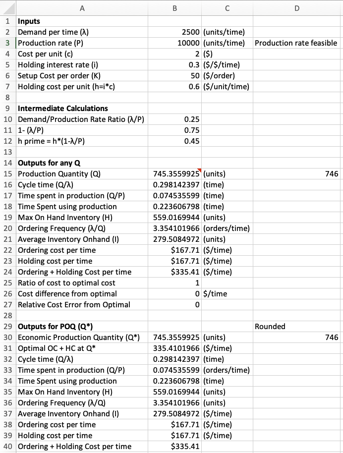
For comparison, ignoring the finite production rate entirely gives \(\sqrt{2(50)(2500)/0.60} = 645.50\) units. Spreading the receipt over time lowers the average inventory for a given lot, which makes larger lots affordable. Thus, the production quantity exceeds the order quantity, by the factor \(1/\sqrt{1 - \lambda/p} = 1/\sqrt{0.75} = 1.155\).
3.10.4 Discount Schedules as Columns
The discount models of Section 3.8 differ from the others in that they require a comparison across levels instead of a single formula. Both worksheets handle this the same way. The price schedule is entered as a table, one row per level, and each step of the procedure becomes a computed column.
For all-units discounting the columns are those of Table 3.6.
| Column | Formula | Step of Section 3.8.1 |
|---|---|---|
| Lower limit, Upper limit, $/unit | typed in | the schedule \(q_j\) and \(c_j\) |
| EOQ | \(\sqrt{2k\lambda/(ic_j)}\) | step 1, the candidate at each price |
| TC(EOQ) | \(c_j\lambda + \sqrt{2k\lambda i c_j}\) | the cost of that candidate |
| Feasible? | IF(AND(lower <= EOQ, EOQ <= upper), "Yes", "No") |
step 2, is the price available at that quantity |
| TC(Lower Limit) | \(c_j\lambda + k\lambda/q_j + ic_j q_j/2\) | step 3, the cost at the break point |
Laid out this way the whole procedure is visible at once. Thus, the third case of Table 3.2, in which a lower interval beats a feasible candidate, cannot be missed by stopping early.
Figure 3.8 shows the result. The schedule occupies columns E through G, with one row per price level, and the four computed columns to its right carry out the procedure one step per column. Reading across a row gives that level’s candidate quantity, its cost, whether the price is actually available at that quantity, and the cost at the break point if it is not. Notice the evaluator block at the left, which prices whatever quantity is chosen and is the same evaluator that appears on every other worksheet in the workbook.
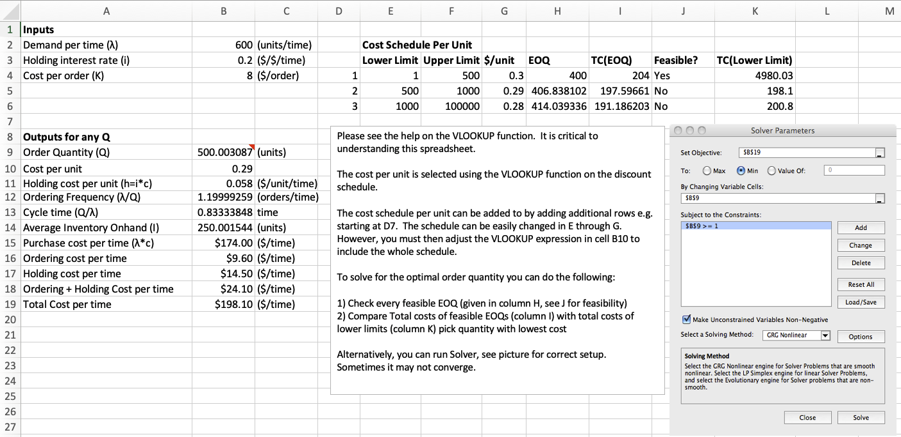
Notice one detail of the schedule table. The first lower limit is entered as 1 and not 0, because a zero would leave the VLOOKUP without a match and would make the \(\lambda/Q\) terms infinite. The model of Section 3.8 sets \(q_1 = 0\). Nothing depends on the difference, because an order of size zero is never a candidate.
The worksheet offers a second route to the same answer. You can name the total cost cell as an objective, the order quantity cell as the variable, and minimize with a solver. It is the less reliable route, for a reason the model has already established. Equation 3.23 is discontinuous, dropping to a lower curve at each break point, and that a gradient method assumes it is not. Started inside one interval, such a method finds that interval’s minimum and stops, exactly the third case of Table 3.2. Thus, the columns enumerate the candidates and cannot miss one, while a solver searches and can.
Example 3.10 (Reading the all-units worksheet) The worksheet has \(\lambda = 600\) units per time, \(k = \$8\) per order, and \(i = 0.20\), together with the three level schedule below. The computed columns of Figure 3.8 fill in as shown.
| Level | \(q_j\) | \(c_j\) | \(h_j = ic_j\) | \(Q_j^{*}\) | Feasible? | \(\mathit{TC}(Q_j^{*})\) | \(\mathit{TC}(q_j)\) |
|---|---|---|---|---|---|---|---|
| 1 | 0 | $0.30 | 0.060 | 400.00 | Yes | 204.00 | |
| 2 | 500 | $0.29 | 0.058 | 406.84 | No | 198.10 | |
| 3 | 1000 | $0.28 | 0.056 | 414.04 | No | 200.80 |
The candidates are therefore \(Q = 400\) at $204.00, \(Q = 500\) at $198.10, and \(Q = 1000\) at $200.80. Order 500.
Level 3 is the instructive row. Its price is the lowest available, and evaluating its unconstrained candidate gives $191.19, which is lower than any figure the table reports. However, 414 units cannot be bought at $0.28, and buying the 1000 units required to reach that price costs more in holding than the price cut returns.
Notice what the two tempting shortcuts would have done. Evaluating candidates in price order and stopping at the first feasible one would have chosen level 1 and $204.00. Evaluating the lowest number in the table would have chosen a quantity that is not for sale. Every candidate must be evaluated, and the columns enforce that.
The incremental worksheet needs one more column, and the way it is built is neater than Equation 3.24. Rather than accumulating the filled-interval cost \(R_j\) and then subtracting \(c_j q_j\), the sheet computes a single fixed cost column recursively.
- Let \(H_j\) represent that fixed cost column at level \(j\).
That is,
\[ H_1 = 0, \qquad H_j = \left(c_{j-1} - c_j\right)q_j + H_{j-1} \tag{3.31}\]
Equation 3.31 is exactly \(R_j - c_j q_j\) from Equation 3.27, obtained without ever forming \(R_j\). Each step adds the amount saved on the \(q_j\) units already bought by dropping to the new price, the same accounting seen from the other side. The effective ordering cost is then \(k_j = H_j + k\).
Figure 3.9 shows the sheet. The fixed cost column sits at the right of the schedule table, and the price and fixed cost applying at a given \(Q\) are retrieved from that table with a VLOOKUP. Notice what is absent. Unlike the all-units sheet, this one carries no candidate columns, so the evaluator at the left is the whole of it, and the comparison across levels has to be made by the reader.
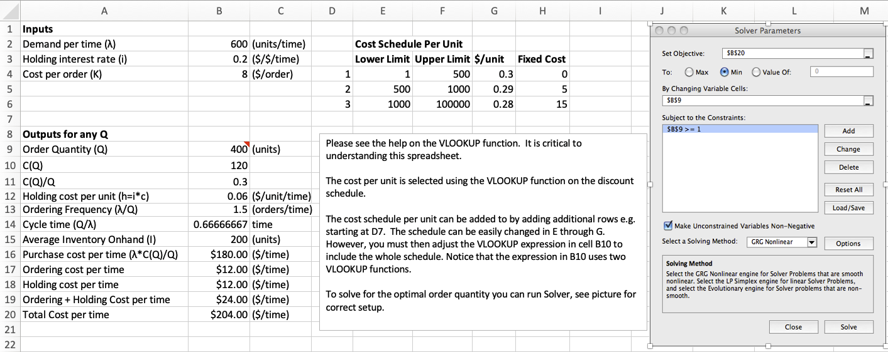
Example 3.11 (Reading the incremental worksheet, and a warning) We keep the same inputs and the same break points as Example 3.10, now under an incremental schedule. The fixed cost column, from Equation 3.31, is
\[ H_1 = 0, \qquad H_2 = (0.30-0.29)(500) + 0 = 5, \qquad H_3 = (0.29-0.28)(1000) + 5 = 15 \]
Thus, the effective ordering costs are \(k_1 = 8\), \(k_2 = 13\), and \(k_3 = 23\), and Equation 3.28 gives
| Level | \(k_j\) | \(h_j\) | \(Q_j^{*}\) | Own interval | Feasible? | \(\mathit{TC}\) |
|---|---|---|---|---|---|---|
| 1 | 8 | 0.060 | 400.00 | \([0, 500)\) | Yes | 204.00 |
| 2 | 13 | 0.058 | 518.62 | \([500, 1000)\) | Yes | 204.58 |
| 3 | 23 | 0.056 | 702.04 | \([1000, \infty)\) | No |
Two candidates survive feasibility, and the smaller one wins. Order 400 at a cost of $204.00 per unit time.
WarningAn evaluator is not an optimizer
Either surviving candidate can be typed into the evaluator block, and both return a plausible number. That is, 400 returns $204.00 and 518.62 returns $204.58, because the block prices whatever quantity it is given.
Because the incremental worksheet carries no candidate columns, a solver run against the total cost cell is the only automated route on it, and that route is unsafe here, for a reason you should understand. The incremental cost function is continuous, so it has none of the jumps that defeat a solver in the all-units case. However, it is kinked at every break point, and each interval carries its own minimum. Both 400 and 518.62 are local minima. A gradient method started near either one reports that one and stops, so only enumeration distinguishes them.
The margin here is 58 cents per unit time against $204, i.e. about a quarter of a percent, exactly the sort of difference that survives unnoticed. The check that catches it costs nothing. Level 2 is not the only feasible level, so its candidate cannot be accepted without evaluating level 1 as well.
3.10.5 What the Worksheets Do Not Do
Three limits need stating plainly, because each of them is a place where a correct spreadsheet still gives a wrong answer.
They evaluate, they do not choose. Every worksheet prices an entered quantity faithfully. Only the all-units sheet enumerates alternatives, and only because someone laid the enumeration out in columns. A solver can be pointed at any of them. However, the two discount models are precisely where a solver is least trustworthy, the case Example 3.11 makes.
They do not know their own assumptions. The production worksheet guards \(p > \lambda\) and nothing else. Nothing checks that demand is actually constant, that the lead time is actually known, or that backorders are actually permitted. Recall that those judgments belong to Section 1.2.2, and you make them before the workbook is opened.
They round after the fact. The ROUNDUP column reports the integer that would be ordered, but the cost figures are computed at the unrounded quantity. For the classic EOQ item that gap is \(1.4 \times 10^{-7}\) of the relevant cost and can be ignored. For an item ordered in cases of 48, as in Exercise 3.5, it cannot. Thus, the evaluator block exists precisely so that the rounded quantity can be entered and priced.
3.11 Designing the Software
Recall that Section 3.10.5 ended with three things a worksheet does not do. It evaluates and does not choose, it does not know its own assumptions, and it rounds after the fact. Those are reasons to write a program. They are not a design.
A worksheet argues for itself. The blocks sit in an order you can see, and a formula is a cell you can click on. A program’s structure is a set of decisions about which classes exist and what each class is responsible for, and a reader handed the finished code sees only the result. In this section we work through those decisions for the six models of this chapter, and Section 3.12 then shows what to type.
Four decisions carry most of the design, and each one is a question that returns in any model you write. We take them in turn.
3.11.1 What Changes, and What Must Not
A worksheet is a thing you edit. You change the ordering cost, the sheet recalculates, and you compare what you now see against the numbers from a minute ago. Both halves of that matter. The inputs have to be editable, and the answer you already took down has to stay where it was.
Those two requirements pull in opposite directions. We meet them with three types.
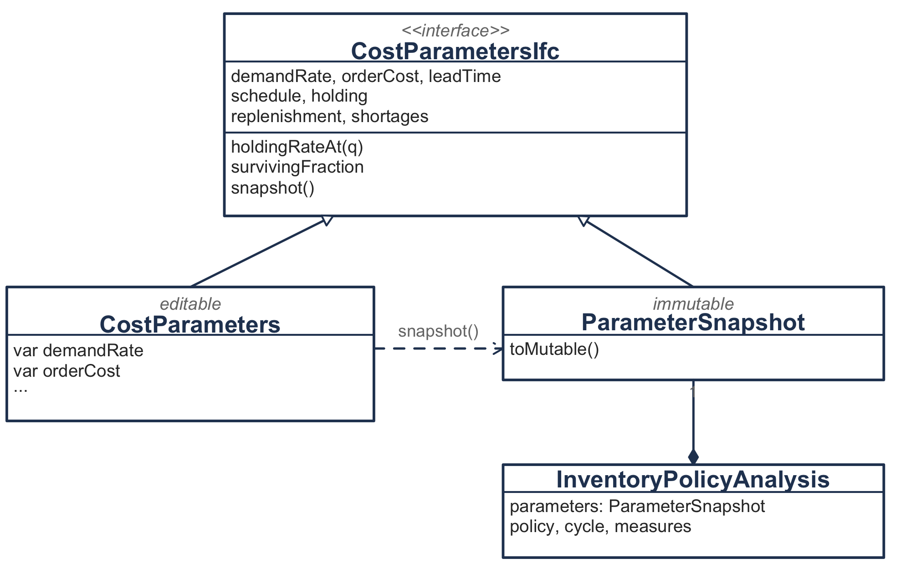
Figure 3.10 illustrates the three answers to one question. CostParameters is the sheet. Every property can be assigned, and every property validates on assignment with the same predicate the constructor applies, so no invalid parameter set ever exists. ParameterSnapshot is the printout, unchangeable once taken. CostParametersIfc is the read-only view, and it is what every model, every cycle and every cost calculation depends on.
The read-only view is the decision doing the work. A model receives the interface, so a model cannot change the parameters it was given. Thus, the mutability is confined to the one place a reader utilizes it, and nothing below the input layer has to be written defensively.
The snapshot makes the arrangement safe.
val analysis = EconomicOrderQuantity.optimize(sheet) // sheet.orderCost is 20.0
sheet.orderCost = 40.0
analysis.parameters.orderCost // still 20.0Every result carries the values that produced it. Notice that the sweep in Section 3.12 assigns sheet.leadTime = lead inside a loop and keeps every analysis. That sweep is sound because each analysis froze its own inputs before the next assignment. Notice also that ParameterSnapshot is itself a CostParametersIfc, so a result can be re-analyzed from its own record.
You should take the general rule from this. When something must be editable and something must be stable, do not compromise between them on one type. Separate what can change from what has been recorded, and make the dependency run from the second to the first.
3.11.2 One Pipeline, Six Models
Section 3.4 derives one model and Section 3.5 obtains five more by imposing assumptions on it. The six therefore agree about almost everything. They agree about the geometry of Section 3.1, the cost assembly of Section 3.3, the reorder point of Section 3.6, and the service measures of Section 3.9. They disagree about one thing, the policy.
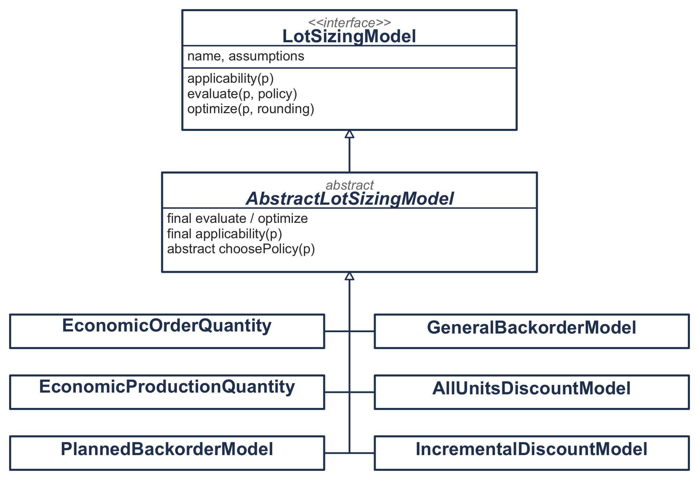
evaluate and optimize are final, and each model supplies a single method that chooses a policy. Notice that no arrow joins the six to one another, which is the point of the next paragraph.
Figure 3.11 illustrates the arrangement. We write the shared part once and leave the varying part open.
abstract class AbstractLotSizingModel(override val name: String) : LotSizingModel {
/** The policy this model chooses for these parameters, and how it chose it. */
protected abstract fun choosePolicy(parameters: CostParametersIfc): ChosenPolicy
final override fun optimize(
parameters: CostParametersIfc,
rounding: QuantityRounding,
): InventoryPolicyAnalysisIfc {optimize and evaluate are final. That is, a model may decide what to order, and it may not decide what a cycle is, what it costs, or when to reorder. Those belong to the chapter and not to any one model, so a model that overrode them would contradict Section 3.1 instead of specializing it.
Table 3.1 obtains the classical economic order quantity from the general model as the replenishment rate and the backorder cost both grow without bound. The obvious move is to make EconomicOrderQuantity a subclass of GeneralBackorderModel. The code does not do so.
A subtype must be usable wherever its parent is, and the classical model is not. It has no backorder cost to be given, and handing it one is the case Section 3.5.2 warns about. What is true is a statement about numbers, that one model’s answer approaches another’s in a limit, and a statement about numbers belongs where numbers can be checked. We record it instead in tests that take the limit and watch the quantities converge. Thus, the relation between the six models is real, is verified, and is not inheritance.
You should carry that distinction past this chapter. Before making B a subclass of A, ask whether every context that accepts an A would accept a B. In the mathematics, “B is a special case of A” is a different claim.
3.11.3 Sealed Types for Closed Sets
Four of the inputs are not numbers. Replenishment is instantaneous or at a rate. Shortages are forbidden or backordered. Holding cost is a charge on value or a rate. A schedule is flat, all-units or incremental. Each one is a small closed set of alternatives, and we write each as a sealed hierarchy.
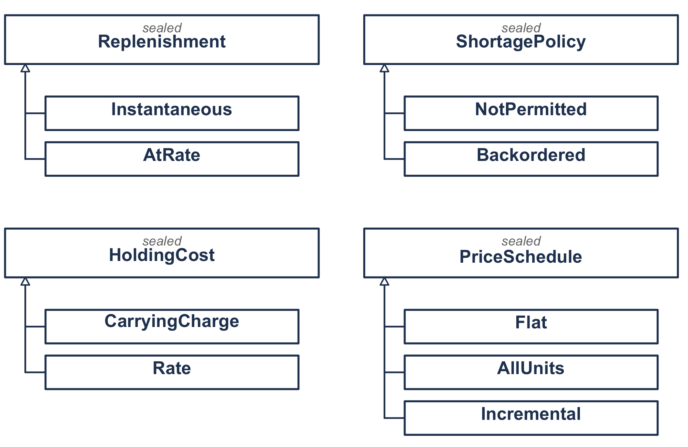
Figure 3.12 illustrates the four. Sealing buys one thing. The compiler knows the whole list, so it can check a decision over the kinds for completeness. That pays when something dispatches on the kind, and here something does. Table 3.1 says which model matches which assumptions, and the code is that table.
fun forParameters(parameters: CostParametersIfc): LotSizingModel {
val schedule = parameters.schedule
if (schedule is AllUnits) return AllUnitsDiscountModel
if (schedule is Incremental) return IncrementalDiscountModel
return when (parameters.replenishment) {
is Replenishment.Instantaneous -> when (parameters.shortages) {
is ShortagePolicy.NotPermitted -> EconomicOrderQuantity
is ShortagePolicy.Backordered -> PlannedBackorderModel
}
is Replenishment.AtRate -> when (parameters.shortages) {
is ShortagePolicy.NotPermitted -> EconomicProductionQuantity
is ShortagePolicy.Backordered -> GeneralBackorderModel
}
}
}There is no else, and the code will not compile if one is needed. For example, adding a third kind of replenishment stops the build at this function, the one place in the program that has to be revisited. The compiler enforces Table 3.1, and no comment asks anybody to remember it.
ShortagePolicy shows a second benefit. Recall from Section 3.5.2 that forbidding shortages is not the same as charging nothing for them, since a backorder cost of zero makes shortages free and sends the order quantity to infinity. A design with one nullable backorder cost would have to catch that at run time. Here NotPermitted and Backordered(b) are different things, and the constructor of the second requires a positive b. Thus, the mistake the callout warns about cannot be written down at all.
We apply one criterion, the closed set and not the tidiness. Section 4.8.5 faces the same choice for the aggregate measures of Chapter 4 and answers it the other way, because nothing there dispatches on which measure it is holding and an organization may always find a fifth thing to run short of. You should seal when the mathematics closes the list and something must visit every case, and leave the hierarchy open otherwise.
3.11.4 An Answer That Carries Its Reasoning
We come to the last decision. It concerns what comes back, and an order quantity is a number that cannot be questioned. Three types let the caller question it.
A model asked to work outside its assumptions has three replies and not two.
sealed interface Applicability {
data object Applicable : Applicability
data class NotApplicable(val reason: String) : Applicability
data class Approximating(val ignored: List<String>) : Applicability
}The third reply is the interesting one. Notice that applying the order quantity to an item with a finite production rate is a deliberate approximation, which Exercise 3.4 asks you to make, so the model allows it and the discarded assumption rides on the result. Asking the planned backorder model for a policy when shortages are forbidden is refused outright, since nothing is left for it to compute. A boolean would treat those two alike.
Each model declares its assumptions once, and the verdict is derived from that declaration in the one place all six share. Stating an assumption in a declaration and then testing for it again by hand would write the same rule twice, in two forms free to disagree.
QuantityChoice records how the quantity was reached, and the routes differ. A closed form produced an interior optimum; or the stationary point lay outside the feasible region, so the answer sits on a boundary and carries a reason; or a candidate list was ranked and retained; or an unrounded optimum was rounded and both neighbours evaluated. Section 3.8 is where the record pays, since a discount answer that does not show its candidates cannot be checked against the worksheet that produced the same number.
Section 3.1.2 says the four durations account for the whole cycle, and advises checking it because the check catches most algebra errors immediately. We write the advice into the constructor.
checkClose(segments.total, length, "the segments sum to the cycle length")
checkClose(maxOnHand + maxBackorder, policy.orderQuantity * survivingFraction,
"the peaks account for the surviving part of the order")Those checks run whenever a cycle is built, and not only in a test. The averages computed from the triangle areas are checked against the closed forms beside them. An identity that the chapter states and the program never verifies is an identity nobody holds to.
The same discipline applies to arguments. Every constructor validates, and so does every function that could divide by a quantity somebody passed as zero. The failure a guard prevents is usually not a crash. A rounding rule asked for an interval of two to the seventieth base periods computes two to the sixth, because the shift that raises two to a power keeps only the low six bits of the exponent. It returns a plausible small number. A guard at the point of construction refuses the exponent, and a test holds the guard in place.
We can now say what a seventh model would cost. It is one object with one choosePolicy, one assumptions declaration, and one branch that the compiler demands in forParameters. Nothing else in the package changes. Apply that test to any design and ask what the next requirement costs.
3.12 The Same Models in Code
The worksheets of Section 3.10 and the Kotlin code that accompanies this chapter compute the same quantities from the same inputs. Section 3.11 said why the code is shaped as it is; here we make the translation. Each part takes one piece of a worksheet, says what it is in code, and shows what to type in order to get the number the sheet shows. Appendix E covers obtaining and running the project.
Table 3.7 is the map, and you can find any equivalent in one lookup.
| In a worksheet | In code |
|---|---|
| The Inputs block | CostParameters, built once |
| The units column beside each input | timeUnit, required at construction |
| Intermediate calculations | Derived properties: survivingFraction, holdingRateAt |
| Outputs for any Q | evaluate(parameters, orderQuantity) |
| Outputs for Q* | optimize(parameters) |
| Ratio, difference, relative error | penaltyAgainst(reference) |
The ROUNDUP column |
roundedOrderQuantity, roundedReorderPoint |
=MOD(τ, T) * λ |
reorderPoint |
=IF(λ >= P, "Infeasible", ...) |
The constructor refuses the rate |
VLOOKUP into the price schedule |
PriceSchedule.unitCostAt |
The Fixed Cost column |
Incremental.fixedChargeAt |
| The candidate columns | QuantityChoice.AmongCandidates |
3.12.1 The Four Blocks as Objects
The four-block layout of Section 3.10.1 survives the translation, with each block becoming something the language already has.
Inputs become an object. CostParameters holds what the Inputs block holds, and it takes the time unit as an argument instead of as a label in an adjacent cell. Notice the difference that makes. The worksheet’s units column is a discipline the reader has to follow, while here it is a constructor argument. Thus, an annual carrying charge cannot be dropped silently beside a monthly demand rate.
Intermediate calculations become derived properties. They are computed on demand from the inputs and cannot go stale, the behavior a spreadsheet formula already has.
The two output blocks become two operations. evaluate prices a quantity that is handed to it, and optimize finds the best one. That is exactly the split Section 3.10.1 describes, and it is why the sensitivity rows have something to join.
The joining rows become a method. penaltyAgainst compares two results and returns the ratio, the difference, and the relative error of Equation 3.22.
Example 3.12 (The classic EOQ sheet in code) Recall the item of Example 3.7, with \(\lambda = 100\) units per month, \(c = \$8\) per unit, an annual carrying charge of 25% entered as a monthly rate, \(k = \$20\) per order, and \(L = 0.25\) month. We build it once and ask it for the optimum.
val sheet = CostParameters(
demandRate = 100.0,
unitCost = 8.0,
orderCost = 20.0,
holding = HoldingCost.carryingCharge(0.25 / 12.0),
leadTime = 0.25,
timeUnit = TimeUnit.MONTH,
)
val best = EconomicOrderQuantity.optimize(sheet)
println(best.report())Economic order quantity
Order quantity 154.9193 units (155 rounded up)
Cycle length 1.5492 month
Order frequency 0.6455 orders per month
Average on hand 77.4597 units
Reorder point 25.0000 units (25 rounded up)
Ordering cost 12.91 per month
Holding cost 12.91 per month
Relevant cost 25.82 per month
Purchase cost 800.00 per month
Total cost 825.82 per monthEvery figure is the sheet’s. Notice that the rounded companions in parentheses are the ROUNDUP column of Figure 3.4, and that the ordering and holding costs again agree at $12.91, the balance check of Section 3.5.4.
The evaluator, and the three rows below it. Handing a quantity to evaluate and comparing it against the optimum reproduces the sheet’s ratio, difference, and relative error:
val chosen = EconomicOrderQuantity.evaluate(sheet, orderQuantity = 155.0)
chosen.penaltyAgainst(best)| \(Q\) | Ratio | Difference | Relative error |
|---|---|---|---|
| 155 | 1.00000014 | $0.000003 | 0.000014% |
| 150 | 1.00052070 | $0.013444 | 0.052% |
| 160 | 1.00052070 | $0.013444 | 0.052% |
| 200 | 1.03279556 | $0.846778 | 3.280% |
3.12.2 The Reorder Point
Section 3.10.2 makes the case for MOD(τ, T) * λ, which handles both cases of Section 3.6 in one function with no branch. Kotlin has the same function on Double. Thus, the translation is direct and reorderPoint is one expression.
Example 3.13 (The reorder point against the lead time) We sweep the lead time on the item of Example 3.12, whose cycle is 1.5492 months.
for (lead in listOf(0.25, 1.0, 1.6, 2.0, 3.0, 4.0)) {
sheet.leadTime = lead
println(EconomicOrderQuantity.optimize(sheet).reorderPoint)
}| Lead time, months | 0.25 | 1.00 | 1.60 | 2.00 | 3.00 | 4.00 |
|---|---|---|---|---|---|---|
| Reorder point | 25.00 | 100.00 | 5.08 | 45.08 | 145.08 | 90.16 |
Notice the drop between 1.00 and 1.60 months, the second order becoming outstanding. Nothing in the code tests for it, because mod has already done so.
Notice also what the loop does with the parameters. sheet.leadTime = lead edits the object in place, the way a worksheet is used. The analyses already produced are unaffected, because each one records the inputs that produced it.
3.12.3 The Same Substitution
Recall from Section 3.10.3 that the production worksheet does not implement Equation 3.14 at all. It computes \(h' = h(1 - \lambda/p)\) and applies the ordinary formula to it. The code does the same thing, and it puts the surviving fraction on the replenishment type so that no formula anywhere has to ask which case applies.
The worksheet’s feasibility guard has a counterpart in code, and it is stricter. =IF(λ >= P, "Infeasible production rate", ...) prints a message beside a sheet that has already computed a wrong answer. In code the rate is refused at construction. Thus, no parameter set with \(p \le \lambda\) ever exists.
Example 3.14 (The production sheet in code) Recall the item of Example 3.9, with \(\lambda = 2500\) and \(p = 10{,}000\) units per year, \(c = \$2\) per unit, \(i = 0.30\) per year, and \(k = \$50\) per setup.
val production = CostParameters(
demandRate = 2500.0,
unitCost = 2.0,
orderCost = 50.0,
holding = HoldingCost.carryingCharge(0.30),
replenishment = Replenishment.atRate(10_000.0, demandRate = 2500.0),
)
production.baseHoldingRate // 0.6000 h
production.survivingFraction // 0.7500 1 - lambda/p
production.baseHoldingRate * production.survivingFraction // 0.4500 h'
val made = EconomicProductionQuantity.optimize(production)
made.orderQuantity // 745.3560
made.cycle.maxOnHand // 559.016994
made.cycle.averageOnHand // 279.5085
made.cycle.replenishmentTime // 0.0745356
made.measures.ordering // 167.71, equal to holdingThe machine runs for 0.0745 year of every 0.2981 year cycle, a quarter of the time, which is \(\lambda/p\) as it must be.
Passing an infeasible rate does not produce a message beside an answer:
The replenishment rate must exceed the demand rate,
but 80.0 is not greater than 100.03.12.4 Discount Schedules as Candidates
Section 3.10.4 lays the discount procedure out as computed columns beside the price table. In code the price table is an object and the columns are a list of candidates. The result carries that list, so that the reasoning can be read and not only the answer.
Example 3.15 (The all-units sheet in code) Recall the schedule of Example 3.10, with \(\lambda = 600\) units per time, \(k = \$8\) per order, \(i = 0.20\), and three price levels. The first break point is 0 here and not the 1 the worksheet uses, for the reason Section 3.10.4 gives.
val allUnits = CostParameters(
demandRate = 600.0,
orderCost = 8.0,
holding = HoldingCost.carryingCharge(0.20),
schedule = AllUnits(listOf(
PriceLevel(breakPoint = 0.0, unitCost = 0.30),
PriceLevel(breakPoint = 500.0, unitCost = 0.29),
PriceLevel(breakPoint = 1000.0, unitCost = 0.28))),
)
val best = AllUnitsDiscountModel.optimize(allUnits)| Level | Break point | Price | Candidate | Total cost | |
|---|---|---|---|---|---|
| 1 | 0 | $0.30 | 400.0000 | 204.0000 | |
| 2 | 500 | $0.29 | 500.0000 | 198.1000 | chosen |
| 3 | 1000 | $0.28 | 1000.0000 | 200.8000 |
Order 500 at $198.10. Notice that the candidates are ranked on the total cost and not on the relevant cost of Equation 1.16. Recall that Section 1.4.1 sets the purchase term aside because it is identical under every policy. Section 3.8 is where that premise stops holding, because once the price depends on the quantity the purchase term is exactly what the decision moves. For example, ranking these three candidates on ordering and holding alone chooses 400, wrong by $5.90 a year.
Example 3.16 (The incremental sheet in code) We keep the same inputs under an incremental schedule. The worksheet’s recursive Fixed Cost column is the schedule’s own calculation:
val schedule = Incremental(listOf(
PriceLevel(0.0, 0.30), PriceLevel(500.0, 0.29), PriceLevel(1000.0, 0.28)))
schedule.fixedChargeAt(0) // 0.00
schedule.fixedChargeAt(1) // 5.00
schedule.fixedChargeAt(2) // 15.00With \(k = \$8\) this gives the effective ordering costs 8, 13, and 23 of Equation 3.27. Optimizing then gives
| Level | Price | Candidate | Total cost | |
|---|---|---|---|---|
| 1 | $0.30 | 400.0000 | 204.0000 | chosen |
| 2 | $0.29 | 518.6189 | 204.5799 |
Order 400 at $204.00. Recall from Section 3.10.4 that the worksheet has 518.62 entered in its evaluator, and that the sheet has no way to rank the two. Here the ranking is the operation itself. Thus, the 58 cents is not left to the reader to notice.
3.12.5 Doing the Three Things a Worksheet Does Not
Section 3.10.5 ends with three things the worksheets do not do. They are the three things the code is for, and we take them in the same order.
It chooses. A worksheet evaluates the quantity it is given. optimize instead returns the best one and carries the candidates it rejected, so the answer arrives with its reasoning attached. Example 3.16 is the case where that matters.
It refuses what it cannot model. A worksheet computes whatever is typed into it. Here the assumptions of Section 3.1.1 are checked where the value is made, and the message says what to do instead:
A backorder cost of zero makes shortages free rather than forbidden.
Use ShortagePolicy.NotPermitted, which is the limit as the cost grows
without bound. See Section 3.5.2.That is the callout of Section 3.5.2 enforced, not printed. A model asked to work outside its assumptions says so too, and it distinguishes two cases. Applying the order quantity to an item with a finite production rate is a deliberate approximation and is allowed, with the discarded assumption recorded on the result. However, asking the planned backorder model for a policy when shortages are forbidden is refused outright.
It rounds as part of the decision. Section 3.7 observes that no warehouse orders 40.37 of anything, and Exercise 3.5 asks what a case quantity costs. Here rounding is an argument to optimize, which evaluates both admissible neighbours instead of rounding the answer afterwards:
EconomicOrderQuantity.optimize(item, QuantityRounding.multipleOf(48.0))| Case quantity | Relevant cost | Penalty |
|---|---|---|
| 192 | $1,782.30 | 1.001355 |
| 240 | $1,806.00 | 1.014671 |
Thus, the reported cost is the cost of the quantity that will actually be ordered, the gap Section 3.10.5 identifies in the worksheets.
3.13 Summary
In this chapter we answered the two questions of Section 1.1, how much to order and when, under the strongest assumption available. That is, everything is known and nothing varies.
One model, specialized four ways. Section 3.1 derives the geometry of a single cycle once, and Table 3.1 obtains every classical result from it by switching an assumption off. The economic production quantity is the general model with shortages forbidden, the classical order quantity is that model with replenishment made instantaneous, and the planned backorder model is the general one with no charge per unit short.
Deriving the cycle once instead of four times is the reason the chapter is arranged this way. It is also why Section 3.9 gets the service measures for nothing, since they are ratios of segment lengths that had been computed already.
Forbidding a shortage is a limit, not a price of zero. A zero backorder cost makes shortages free, not forbidden, and it sends the order quantity to infinity. The no-shortage models are instead the limit as \(b\) grows without bound. That is the distinction Section 3.5.2 is careful about, and it is the one that most often goes wrong.
Cost balances at the optimum, and the total is flat around it. Ordering and holding cost are equal at \(Q^{*}\), the fastest arithmetic check available. The penalty for departing from the optimum depends only on the ratio \(Q/Q^{*}\) and on nothing else about the item. Thus, being wrong by a fifth costs almost nothing and being wrong by half costs 25%. That tolerance is the reason it is reasonable to order in case quantities and to fit a delivery schedule, and it is what Chapter 4 exploits when it forces items to share a cycle.
Timing is a separate decision from quantity, and it reads the position. The reorder point covers only the demand not already covered by orders outstanding. It is therefore not monotone in the lead time, and Equation 3.21 is written in terms of inventory position and not stock on hand.
A price schedule changes the problem in kind. While the unit cost is constant the purchase term is inert and can be set aside. Once the supplier prices in tiers it is exactly what the decision moves. Thus, the cost rate is no longer smooth, and the answer is selected from a candidate list instead of obtained by differentiating. Section 3.8.1 and Section 3.8.2 differ in whether the break points are themselves candidates, and that difference follows from whether the cost function jumps.
Everything in this chapter rests on demand being known and constant. In the next chapter we keep that assumption and remove a different one, that items can be decided independently, the subject of Chapter 4. Chapter 5 then keeps independence and lets demand vary over time. From Chapter 7 onward demand stops being known at all, and the quantities this chapter computed exactly become quantities that must be estimated.
3.14 Exercises
Unless an exercise says otherwise, use these conventions so that your answer and the instructor’s agree. Take the time unit to be one year, and convert any rate quoted on another basis before using it. Report order quantities and reorder points to two decimal places, cycle times to four, and costs to the nearest cent. Round an order quantity to an integer or to a case multiple only when the exercise asks for the quantity that would actually be ordered, and price the rounded quantity and not the unrounded one when you do.
Exercise 3.1 An item is demanded at \(\lambda = 600\) units per year and replenished at \(p = 1500\) units per year. The order quantity is \(Q = 300\) and the policy permits a maximum backorder level of \(\hat{B} = 40\) units.
Following Example 3.1, determine the peak on-hand level, the four segment lengths, and verify that they sum to \(Q/\lambda\). Compute \(\bar{I}\) and \(\bar{B}\) both from the triangle areas and from the closed forms, and confirm they agree.
Then, following Example 3.6, report the order frequency, the fraction of time out of stock, the ready rate, and the average customer wait in days.
Exercise 3.2 An item is demanded at \(\lambda = 1500\) units per year and costs $40 per unit. The ordering cost is $120 per order, the carrying charge is 22% per year, no shortages are permitted, and replenishment is instantaneous.
Following Example 3.2, determine the economic order quantity, the optimal cycle length in days, the optimal total cost, and the reorder point for a 10 day lead time.
Then determine what the reorder point would be if the lead time were 70 days instead, using Equation 3.21, and explain in one sentence why the answer is not \(\lambda(70/365)\).
Exercise 3.3 Show that at \(Q = Q^{*}\) the ordering cost rate and the holding cost rate are equal, and that each equals \(\tfrac12\sqrt{2k\lambda h}\).
Then use this to construct a check that requires no square roots: given a candidate \(Q\), state a one-line test that determines whether \(Q\) is too large or too small.
Exercise 3.4 A component is used at \(\lambda = 4000\) units per year and produced in house at \(p = 10{,}000\) units per year. The setup cost is $250 and the holding cost is $3 per unit per year. Shortages are not permitted.
Determine the economic production quantity from Equation 3.14 and the economic order quantity from Equation 3.17, and report the ratio of the two.
Show algebraically that the ratio depends only on \(\lambda/p\), and determine what happens to the production quantity as the production rate approaches the demand rate. Explain what that limit means physically.
Exercise 3.5 The item of Exercise 3.2 is supplied in cases of 48 units, so the order quantity must be a multiple of 48.
Determine the two case quantities nearest the economic order quantity, use Equation 3.22 to compute the cost penalty of each, and recommend one. State the annual dollar cost of your recommendation relative to the unrounded optimum.
Exercise 3.6 An item has \(\lambda = 5000\) units per year, an ordering cost of $40, and a carrying charge of 25% per year. The supplier offers an all-units discount schedule:
| Order quantity | Unit price |
|---|---|
| \(0 \le Q < 300\) | $20.00 |
| \(300 \le Q < 700\) | $19.00 |
| \(Q \ge 700\) | $18.00 |
Following Example 3.4, determine the optimal order quantity. Report which candidate quantities you evaluated and why each was or was not feasible, and give the total cost at each.
Then state which of the three cases in Table 3.2 applies, and explain why evaluating only the first feasible candidate would have given the wrong answer.
Exercise 3.7 Repeat Exercise 3.6 with the same break points and prices, but under an incremental discount schedule rather than an all-units one.
Following Example 3.5, compute \(R_j\), the effective ordering cost \(k_j\), and the candidate quantity for each level. Determine the optimal order quantity and total cost.
Compare your answer with Exercise 3.6 and explain, in terms of what each scheme charges, why the incremental schedule produces the smaller order.
Exercise 3.8 An item has \(\lambda = 1200\) units per year, an ordering cost of $100, a holding cost of $6 per unit per year, and a backorder cost of $15 per unit per year. Replenishment is instantaneous and there is no per-unit stockout charge.
Determine \(Q^{*}\) and \(\hat{B}^{*}\) from Equation 3.15, and compute \(\bar{I}\), \(\bar{B}\), the ready rate, and the average customer wait.
Compare \(Q^{*}\) with the order quantity that would be used if backorders were forbidden, and explain why permitting backorders increases the order quantity. Then determine what backorder cost \(b\) would be needed for the two order quantities to differ by less than 1%.
Exercise 3.9 A planner argues that because the total cost curve is flat near its minimum, as Figure 3.2 shows, the economic order quantity is not worth computing and any reasonable quantity will do.
Using Equation 3.22, determine the range of order quantities, expressed as a multiple of \(Q^{*}\), over which the relevant cost stays within 2% of its minimum. Then state the two circumstances from Section 1.4.8 under which the planner’s argument fails, and explain which of them applies to the quantity discount problems of Section 3.8.
Exercise 3.10 The Classic EOQ worksheet of Example 3.7 is set up in months, with \(\lambda = 100\) units per month, \(c = \$8\), a carrying charge of 25% per year, \(k = \$20\) per order, and \(L = 0.25\) month.
Reproduce the optimizer block by hand: \(h\), \(Q^{*}\), \(T^{*}\), the two cost components, the total cost rate, and the reorder point.
Then change the carrying charge to 30% per year and recompute. Report the percentage change in \(Q^{*}\) and show algebraically that it depends only on the ratio of the two carrying charges, not on \(\lambda\) or \(k\).
Exercise 3.11 For the item of Exercise 3.10, whose optimal cycle is \(T^{*} = 1.5492\) months, compute the reorder point from Equation 3.21 for lead times of \(L = 0.25\), \(1.0\), \(1.6\), \(2.0\), \(3.0\), and \(4.0\) months.
Plot \(r\) against \(L\) and describe the shape. Explain why \(r\) can be smaller at \(L = 1.6\) than at \(L = 1.0\), and state the largest value \(r\) can take for this item.
Then explain in one sentence why a worksheet that computed \(r = \lambda L\) would be wrong for every lead time in the table beyond the first.
Exercise 3.12 The incremental discount worksheet of Example 3.11 evaluates a quantity that is entered instead of selecting among the candidates, so an analyst who computes 518.62 for level 2, finds it feasible, and enters it gets a plausible answer that is not the optimum.
Redesign it. Using Table 3.6 as the model, specify the computed columns that would turn the incremental schedule table into a self-selecting one: give the formula for each column, including the fixed cost recursion of Equation 3.31, and state the rule that picks the answer from the completed table.
Explain why your design needs no column corresponding to \(\mathit{TC}(q_j)\), the break-point candidate that the all-units sheet requires.
Exercise 3.13 Take the item of Example 3.12 and, in code, reproduce every figure of Example 3.7: the holding cost rate, the order quantity, the cycle length, the two cost components, the total cost rate, and the reorder point.
Then set the order quantity to each of 150, 155, and 160 and report the ratio, difference, and relative error against the optimum. Explain in one sentence why two of the three carry the same penalty.
Exercise 3.14 The item of Example 3.14 is produced at \(p = 10{,}000\) units per year against demand of \(\lambda = 2500\).
In code, reduce the production rate toward the demand rate in steps and record the order quantity at each. Report what happens to it, and explain the limit in terms of Equation 3.14.
Then attempt to set the production rate to 2000 and report what happens. Contrast that with what the production worksheet of Example 3.9 does with the same value, and say which behavior you would rather have in a program that runs unattended.
Exercise 3.15 Example 3.15 ranks its three candidates on total cost. Rank them instead on the relevant cost of Equation 1.16, report the quantity that ranking selects, and compute what choosing it would cost per year.
Then state the condition under which the two rankings agree, and explain why the worked example of Example 3.4 does not reveal the difference while the schedule of Example 3.15 does.